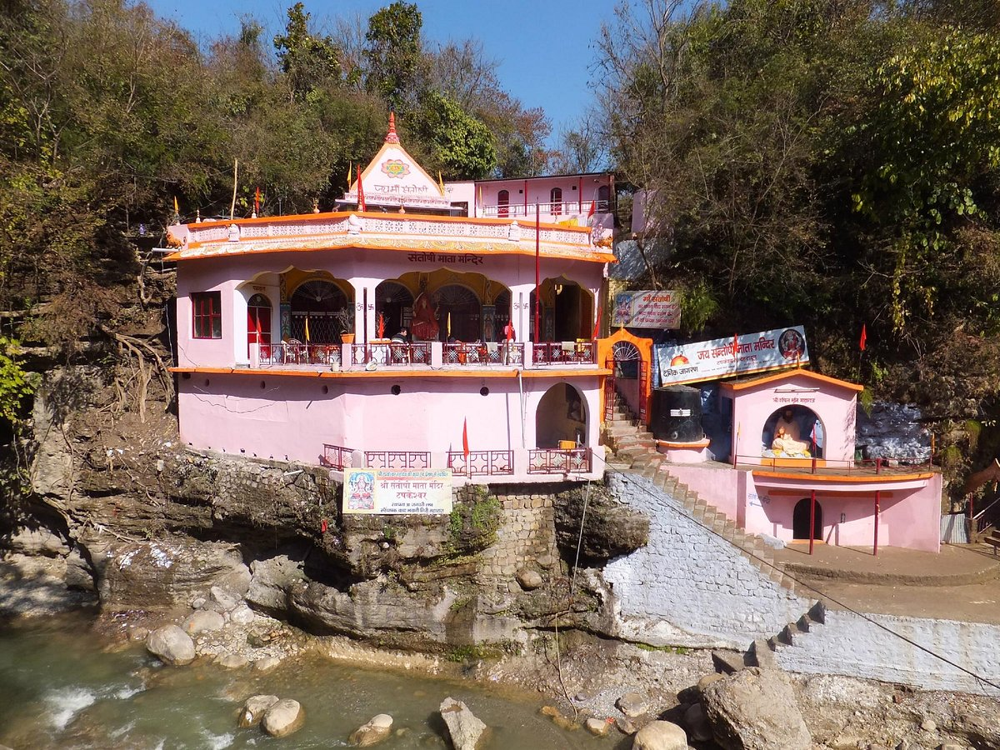
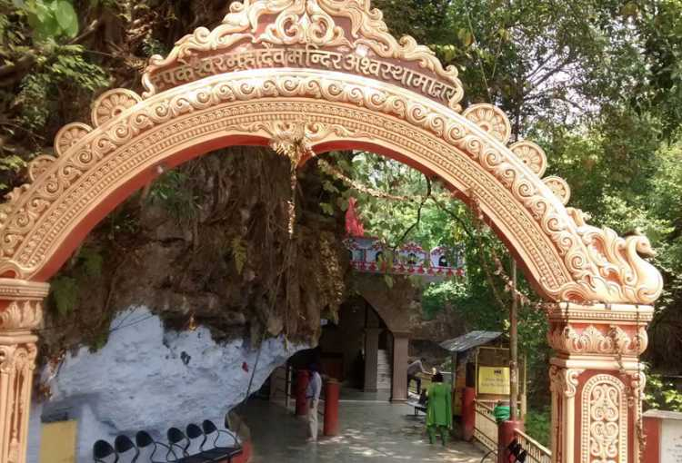

Tapkeshwar Temple

Tapkeshwar is a popular blessed sanctuary of Lord Shiva on the bank of occasional Asan waterway close to Dehradun.
Known to have one of the most seasoned Shivling in the cavern, Tapkeshwar Mahadev Temple is situated at 6.5 km from Dehradun city.
As water beads ceaselessly drops on the shivling, subsequently it was named as 'Tapkeshwar'.
